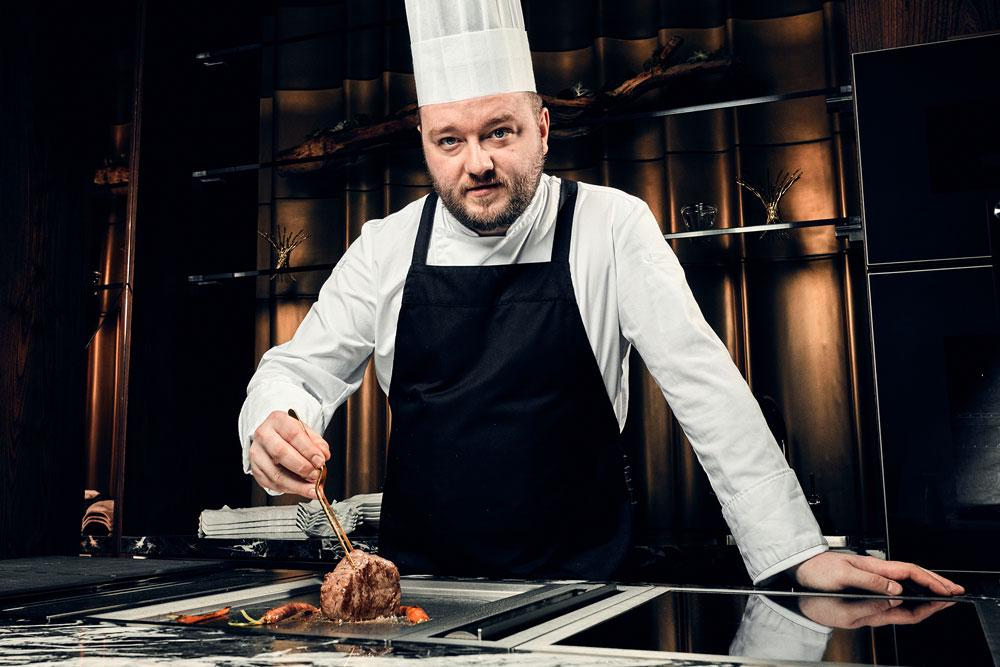
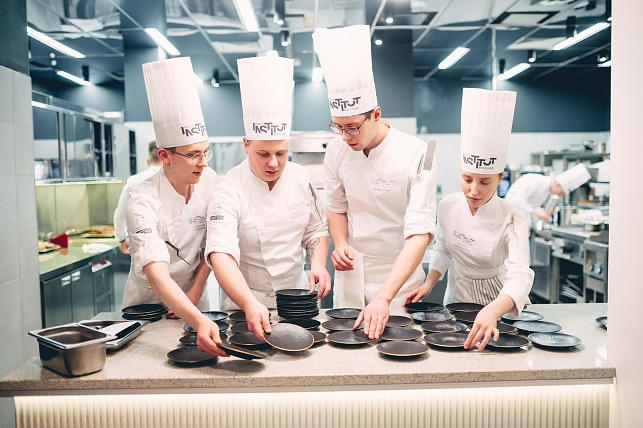
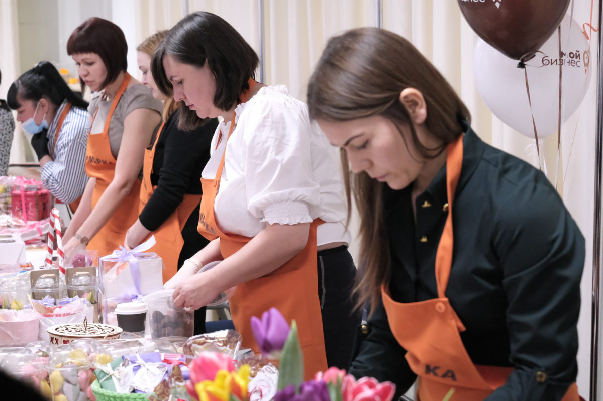

Участники

Рестораны и повара-шефы
Лучшие рестораны и известные повара могут представить свои лучшие блюда и демонстрировать мастерство приготовления во время кулинарных мастер-классов. Они могут предложить посетителям уникальные меню и необычные комбинации ингредиентов из разных кухонь мира.

Кулинарные школы и учебные заведения
Школы кулинарии и университеты, специализирующиеся на гастрономии, могут проводить демонстрационные занятия и мастер-классы для посетителей. Это дает возможность учащимся и аспирантам показать свои навыки и таланты в области кулинарии.

Местные предприниматели и стартапы
Молодые предприниматели и стартапы, работающие в сфере пищевой промышленности, могут представить свои инновационные продукты и концепции ресторанов. Это может быть все, от уникальных рецептов до новых технологий приготовления пищи.